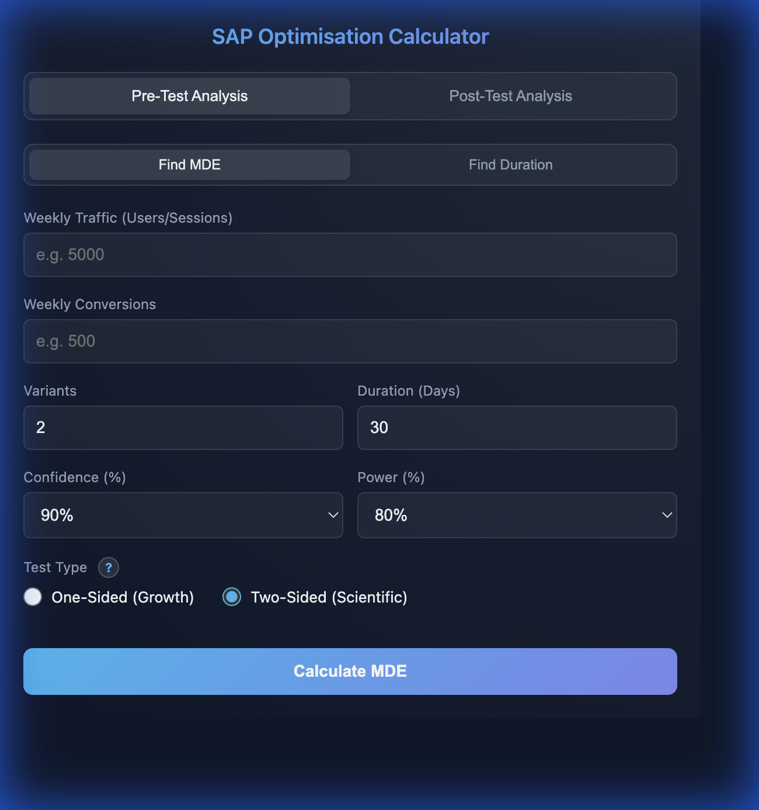
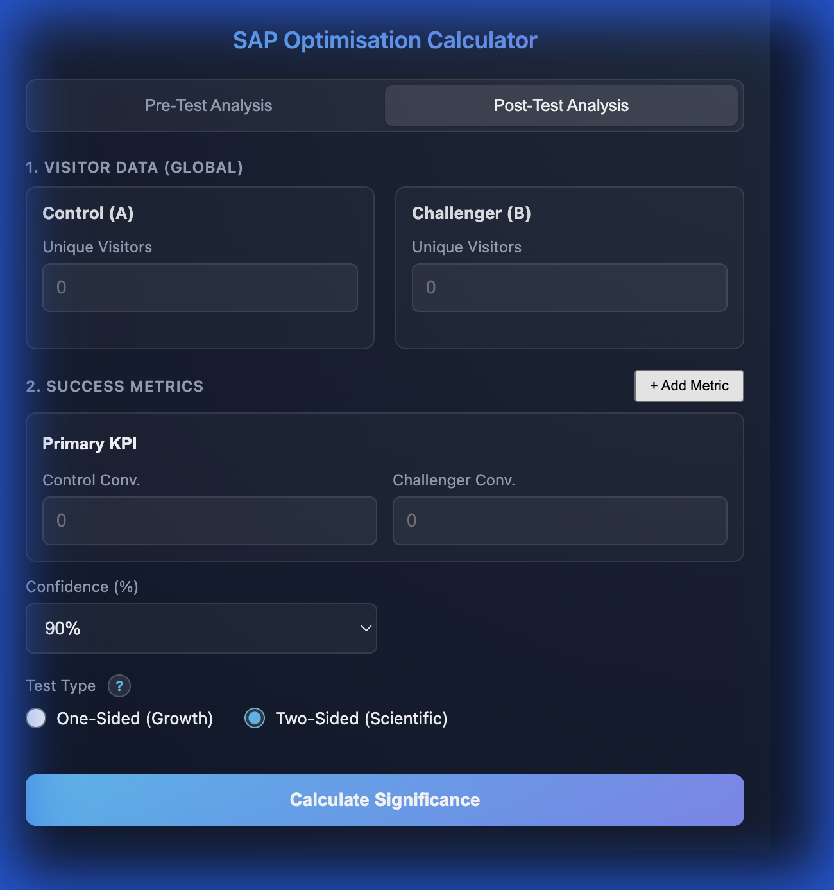

SAP Optimisation Calculator - Documentation
Overview
The SAP Optimisation Calculator is a Chrome extension designed to assist with A/B testing analysis. It provides
tools for both **Pre-Test planning** (calculating MDE and sample size) and **Post-Test analysis** (determining
statistical significance).
1. Installation
1. Download this repository.
2. Open Chrome -> Manage Extensions.
3. Enable Developer mode.
4. Click Load unpacked and select this folder.
2. Pre-Test Analysis

Determine the Minimum Detectable Effect (MDE) and sample size required before starting a test.
How to Use:
- Open the extension and ensure you are on the Pre-Test Analysis tab.
- Enter your Weekly Traffic and Weekly Conversions (e.g., 5000 visitors, 250 conversions).
- Adjust the Variants, Duration, Confidence, and Power if needed.
- Click Calculate MDE.
Output:
- Target Conversion Rate: The minimum rate the challenger needs to reach.
- Relative MDE: The percentage lift required (e.g., "Requires 15.4% relative lift").
2. Post-Test Analysis

Analyze the results of an A/B test to determine statistical significance.
How to Use:
- Switch to the Post-Test Analysis tab.
- Enter the Unique Visitors for both Control and Challenger.
- Add metrics (e.g., "Signups") and enter Conversions for each variation.
- Select your Confidence level (e.g., 90%).
- Choose the Test Type:
- One-Sided (Growth): Checks if Challenger > Control (Standard).
- Two-Sided (Scientific): Checks for any difference.
- Click Calculate Significance.
Output:
- p-value: The probability that the result is due to chance (e.g., `p = 0.035`).
- Verdict: A clear recommendation on whether the result is significant.
- Confidence Interval: The range of likely conversion rates.